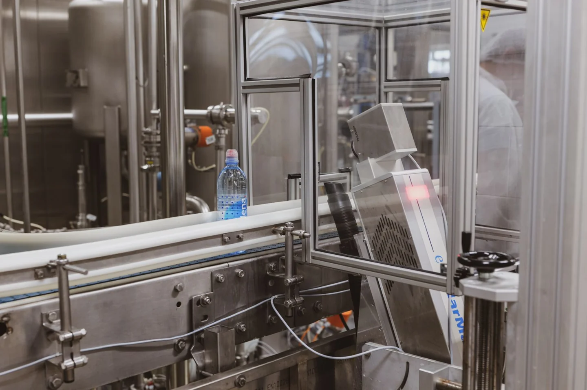

浮き・傾き
横から、キャップの下端とボトルの口の間を見る。途中まで締まった状態と、正常な状態を比べます。
充填・包装ラインの外観検査
キャップの浮き、賞味期限のかすれ、ラベルのずれ。いま流れている製品と不良品を並べ、カメラで何が見えるかから調べます。
評価に必要なものを見る
検査の対象
同じボトルでも、キャップ・印字・ラベルで撮る方向が変わります。
横から、キャップの下端とボトルの口の間を見る。途中まで締まった状態と、正常な状態を比べます。
賞味期限やロット番号が見える位置を確認。曲面の反射や印字の濃さも条件に入れます。
上下の端や継ぎ目を目印に。位置を判定する場合は、どこまでを良品とするかも先に決めます。
導入前の評価
製品の色やライン速度が違えば、同じ検査でも結果は変わります。
不良の種類と、見逃したくない境目を決めます。
反射、ボトルの向き、現場で撮れる距離を確認します。
速度や品種を変え、良品を止め過ぎないかも確かめます。
評価のご相談
まずは一つの製品、一つの不良でかまいません。分かるものからお持ちください。